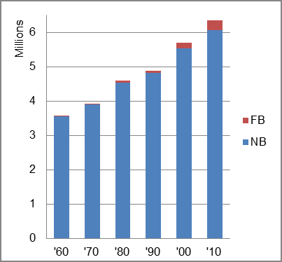

The foreign-born (FB) population increased from 15,843 in 1960 to 288,993 in 2010. That was an increase of 1724.1 percent. The foreign-born share increased from 0.4 percent in 1960 to 4.6 percent in 2010.
The share of the overall population that was native-born (NB) increased by 70.6 percent.
Tennessee: Population 1960-2010 
The first chart below shows the three population change factors for three periods adjusted for annual average amounts. The largest factor in the earliest two periods was NDM and in the latest period was B-D.
The second chart shows the same data but with an adjustment to reflect births to immigrants shifted to NIM. In it, NDM was the largest factor in population increase in all periods, and NIM became the second largest factor in the two most recent periods.
Tennessee: Sources of Population Change 1990-2013 Tennessee: Sources of Population Change (Adjusted) 1990-2013
B-D NDM NIM B-D NDM NIM 90-'99 36.7% 58.4% 5.0% 90-'99 29.7% 58.4% 11.9% 00-'09 39.1% 45.2% 15.6% 00-'09 26.4% 45.2% 28.3% 10-'13 42.7% 39.5% 17.8% 10-'13 24.2% 39.5% 36.3%